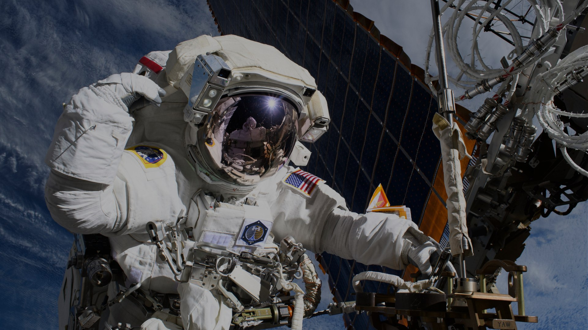

Data langsung dari orbit
Pos kendali pribadimu untuk Stasiun Luar Angkasa Internasional - posisi, kecepatan, dan cuaca di titik orbitnya, diperbarui langsung setiap beberapa detik.
Kecepatan orbit~27.600 km/jam
Satu putaran~93 menit
Ketinggian~400 km
Sumber data: wheretheiss.at, Open-Meteo, CelesTrak, NASA